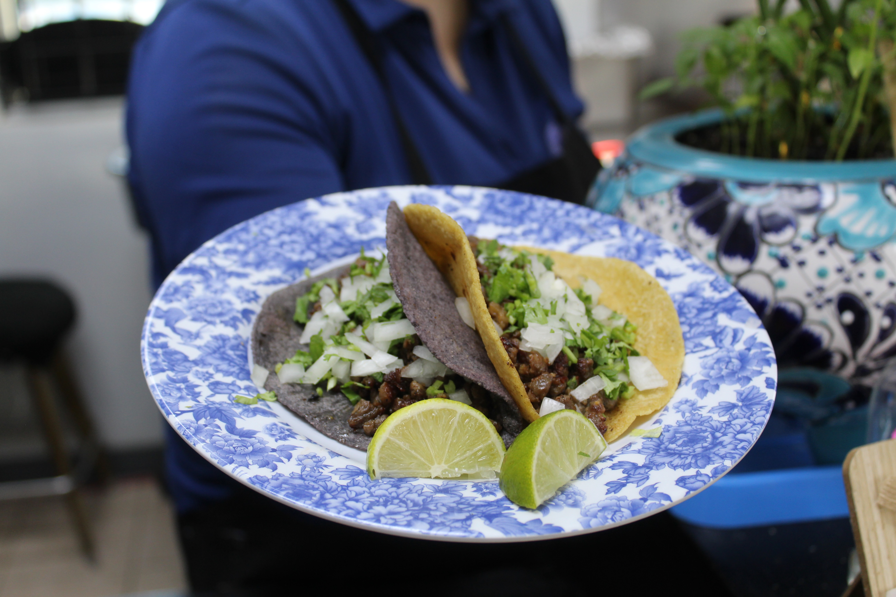

ABOUT US
A TASTE OF TRADITION, COLORED IN BLUE

At Taco Azul near downtown Arlington, we share the flavors of traditional Mexican, through time-honored recipes and handmade blue corn tortillas crafted fresh every day.
Our passion is in fresh food and bringing authentic flavors - from smoky bistec to sizzling al pastor - to our community. Come visit our taqueria for a taste of Mexico - flavors that are bold, true and blue!